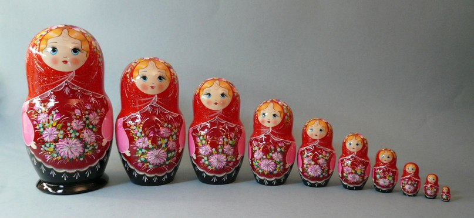

Recursion: Explained with Russian Dolls!

In this post I use the analogy of Russian dolls to describe recursion, the idea being recursion is just a function within a function within a function...
29/03/2015
Recursion reminds me of those little Russian dolls that are stacked within themselves. Or Matryoshka dolls as google tells me! For those who are unfamiliar, within each Russian doll is a smaller doll, until you get to the smallest doll of the set, which contains nothing.
A recursive function in programming is a function which calls itself. It keeps on calling itself until it reaches it’s "base condition."" The base condition is a condition which says okay, the argument which we have feed into the initial function has been modified to match the base condition argument, it’s now time for this function to stop calling itself. This will become clearer as we proceed.
A recursive function is like a set of Russian nested dolls because we are dealing with a function within a function, within a function until we reach the smallest doll which contains nothing and the recursion stops.
Let me simplify by walking through a scenario involving those matryoshka dolls!
The Russian Doll example
Let’s say we have 5 Russian dolls, each doll is numbered, the largest doll is numbered doll 5, the smallest is doll 1. The smallest is packed inside the next biggest, right up until doll 5.
Let’s say that written across the foreheads of each Russian doll there are two instructions for us too follow. I will later compare these instructions to the body of a recursive function. The instructions are read and followed in this order:
- If this is doll the smallest doll (doll number 1) stop unpacking dolls. And quit this unpacking process.
- If a doll hasn't been opened yet, open it. Put it’s contents to the side and close the doll you just opened.
If you followed these instructions you’d open the biggest doll and put it’s contents to the side. You’d see the next biggest doll with the same instructions on it and then follow them until you unpacked all 5 Russian dolls, stopping the process on the smallest doll.
Turning our example into code
A recursive function is a function which calls itself. The doll function could be called “unpack” it might look as follows:
Let’s take a look at this recursive function and break it down, relating each expression of code, to each part of the Russian doll analogy above.
Our "Base Condition"
The instruction mentioned above in the Russian doll example which stated:
If this is doll the smallest doll (doll number 1) stop unpacking dolls. And quit this process.
This is comparable to the following line of code:
A key to understanding recursive conditions is understanding that the argument which we will originally feed in when calling the unpack function will change within the function as the function call’s itself continuously. The argument will change. This allows us to start off by feeding in 5 dolls, and end up with a base condition represented above which says that if the argument number get’s to 0, exit the program.
This condition is necessary, because if you think about it, if we had no end goal which we were working towards, then a condition which called itself and slowly changed it’s arguments would keep on doing that forever. In a loop in Javascript there is a break condition which breaks the loop, in a recursive function (a function which calls itself) there is a condition known as a “base condition” which stops the function from calling itself.
The Recursive Statement
Now let’s look at the console log condition before examining the recursive condition. Console log says that we are now unpacking doll number (insert doll number). Notice that if there are 5 dolls to start off with, in the first call of the recursive condition it will print “We are unpacking doll number 5.”
Now let’s look at the recursive statement in the function unpack. The instruction referenced above which says:
If a doll hasn't been opened yet, open it. Put it’s contents to the side and close the doll you just opened.
The code equivalent of this instruction is:
Our unpack function is self calling. It is a function who’s instructions keep on telling us to continually open dolls until we’ve reach the smallest one.
To reiterate, the function is calling itself. We simply hit run, and then it’ll keep on calling itself until it reaches a base condition and stops. Like a feather dropped from a tower slowly circling continuously until it hits the ground. It is called with 5 dolls originally by us. Then it call’s itself with 4 dolls as it’s argument. Then it call’s itself with 3 dolls right until there are no more dolls left to call the function, it’ll then trip the base condition and the recursion will have stopped. And that’s an example of how a recursive function works.
Termination condition
What if someone entered a number of dolls into our computer which didn’t make sense, for example -3. Well obviously we intuitively know that this makes no sense in the real world (how can you have -3 dolls) but the function we wrote above doesn't know this unless you include a termination condition, for arguments which don’t really make any sense.
A termination condition is a condition which will not allow the function to even start calling itself if an unexpected argument is written in. A termination condition for our doll example might look something like this:
Now our function will only accept positive numbers of Russian dolls!
Recursive Functions vs. Loops
If you think that recursive function look similar to loops, that’s because they are quite similar. Sometimes the decision to use one over the other can be simply down to a person’s own coding style. But there are some cases where it is fair to say that a recursive function simply reads better then a loop, people might be able to grasp what you are doing more intuitively with the code you have written despite being functionally identical to using a loop. So getting familiar with recursive conditions is definitely worth knowing!
However sometimes it makes more sense to use a loop. In typical JavaScript implementations, it’s about 10 times slower using a recursive function than the looping version. (Eloquent JavaScript). Running through a simple loop is a lot cheaper than calling a function multiple times, in terms of maximizing the power of your program.
Marijn Haverbeke succinctly and elegantly sums up the trade off between making your code readable for other programmers and making your code effective very well with regards to recursion in Eloquent JavaScript:
“The dilemma of speed versus elegance is an interesting one. You can see it as a kind of continuum between human-friendliness and machine-friendliness. Almost any program can be made faster by making it bigger and more convoluted. The programmer must decide on an appropriate balance.”
It’s useful to be familiar with both loops and recursion and knowing when to use one over the other can sometimes be a case by case decision based on how much you prioritize readability of your code over efficiency.
Summary
There are many more complex layers to recursive functions, for example instead of calculating Russian dolls we can use them to calculate a number’s factorial as well as other applications. Here’s a summary though of what makes up a recursive function:
Now out recursive condition has three parts to it which allows it to work:
- A base condition which say’s to the function, we are done calling ourself!
- A termination condition, this says if we get a weird argument which might cause our function to call itself forever, then simply stop the function before it get’s to that point.
- The recursive part of the function, you should recognize this when you can clearly see the function being called within the function. Like a Russian doll within a Russian doll!
"весело обучения рекурсию!" which is Russian for have fun learning recursion !!